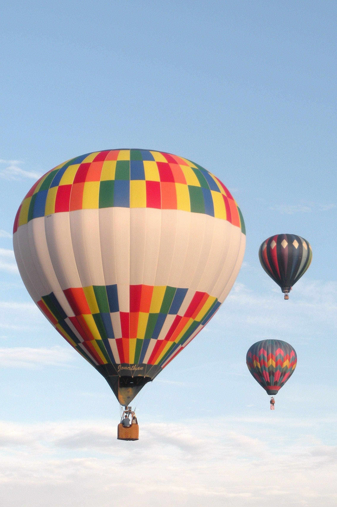

Latest Posts
Maldives
The Maldives consists of 1,192 coral islands
grouped in a double chain of 26 atolls, that
stretch along a length of 871 kilometres
north to south, 130 kilometres east to west,
spread over roughly 90,000 square
kilometres, of which only 298 km2 is dry
land, making this one of the world's most
dispersed countries. The atolls are composed
of live coral reefs and sand bars, situated
atop a submarine ridge 960 kilometres long
that rises abruptly from the depths of the
Indian Ocean and runs north to south.

Cappadocia
The area is a popular tourist destination,
as it has many areas with unique geological,
historic, and cultural features. Touristic
Cappadocia includes four cities: Nevşehir,
Kayseri, Aksaray and Niğde. The region is
located southwest of the major city Kayseri,
which has airline and railway service to
Ankara and Istanbul and other cities. The
most important towns and destinations in
Cappadocia are Ürgüp, Göreme, Love Valley,
Ihlara Valley, Selime, Guzelyurt, Uçhisar,
Avanos and Zelve. The three main castles in
Cappadocia are Uçhisar Castle, Ortahisar
Castle, and Ürgüp Kadıkalesi (Temenni Tepe).
Among the most visited underground cities
are Derinkuyu, Kaymakli, Gaziemir and
Ozkonak. The best historic mansions and cave
houses for tourist stays are in Ürgüp,
Göreme.
